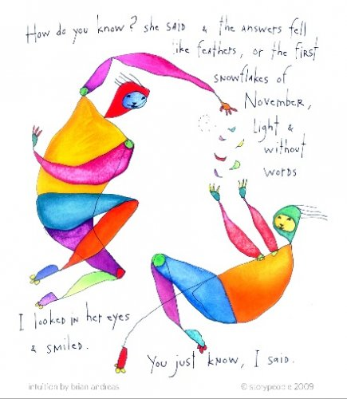

"Most people don't know what to believe.
They aren't the originators of their own opinions.
They take cues from the conviction of others."
--Eric Jorgensen
"Flush it down the toilet and keep going."
--Jed McKenna
In my world there’s a dance champion who teaches dancing through the science of body movement. His favorite discussion is about proprioception.
People sign up in droves to take his classes, talking about what a good teacher he is, how amazing his point of view is, and try to memorize his teachings.
Why? They’re hoping to catch a bit of what he’s got on the dance floor.
No one seems to notice that his students, despite lots of such classes with him, do not improve.
Turns out, what this pro has got can’t actually be found in a discussion of the science of body movement.
Turns out, at some point one has to throw out the theories, step out on the floor, and dance. Move, try, experiment.
As opposed to sitting in a classroom talking about dancing. As opposed to quoting others who talk about dancing.
Perhaps this sounds familiar, lovely spiritually-minded readers of enlightenment and understanding?
Shall we join all those nonduality teachers and not-teachers posting 15 or 20 paragraphs about the I, death, true nature, choice, embodiment, and whether reality is real?
Will that ever enable you to spiritually dance?
Shall we have a heated conversation itemizing the differences, rightnesses and wrongnesses of classical Advaita vs Neo Advaita vs Buddhism?
Although let’s face it- if I’m involved, that’ll be a short conversation, unless you have a lot to say.
Because I frankly don’t know the difference between Advaita Vedanta and Neo Advaita.
Basically I frankly, basically, um, don’t care.
For me, there’s no interest in all those books, youtubes, podcasts out there. There’s no interest in quotes by Ramana, Nisargadatta, Krishnamurti, Rupert. (I include them in the Mind-Ticklers because you like them.)
There’s no interest in all those predictable, repetitive, and supercilious conversations in Facebook groups about self, free will, consciousness and which Advaita is the right Advaita.
Why would I have any interest in studying or blathering unendingly about someone else’s viewpoint?
That would only make sense if I think they have something I don’t. Something that I could actually get via learning their words, or repeating their words.
So my question for you today is, how does studying, reading, talking about someone else’s point of view, or even any point of view at all, ever get you what you want?
After all, it can never be your own when you’re solidifying an opinion according to others.
And it can never be your own when you’re talking about experience rather than being experience.
Though of course I do get that the mind says it wants to understand, and that it doesn’t know how to do that on its own. I do get that it wants to select a favorite point of view, latch on for dear life, and know evermore thereafter what’s right and true, by leaning on that point of view.
That way you can be guided by rightness. That way you can know what to do. That way you have something to grab onto.
I get the comfort, self-enhancement, and reassurance of thinking you finally have something.
Empty as it is.
But my friends, that’s not actually what is being sought, now, is it.
Alright, so let’s finally turn to that thought that's most likely been screaming, “But how? How do I do this?”
Here’s how.
Answer the questions that arise for you, yourself.
Is there a self? Are you everything, or nothing? Do you die? What is consciousness, what are you, do you have free will? What cares about any of that? What cares if you have free will? What wants to know?
Ask yourself. Answer yourself.
Be very literal, so that mind doesn’t play tricks.
See what you find, answering your own questions.
You might be very surprised to discover that answers come.
Though perhaps not the way you expect.
Perhaps not with words. Perhaps not with certainty. Perhaps not with reassurance.
But in their own way.
Differently than you’re used to when you lean on others to supply answers.
Maybe showing up simply as a spacious sense of opening or not knowing.
Or not. I don’t know what you will find.
And could your answers be (gasp!) wrong?
Notice how much you're afraid of that.
As if being wrong is a disaster that's worth keeping you imprisoned in someone else's theoretical life forever.
Besides, what does wrong even mean? According to whom? Who would decide? Who would know?
Robert, Shiv, Watts, Ramana- not them. They are guessing just like you.
They have no more lock on rightness than you do. No matter how confident they appear, everyone is making it up as they go.
But don’t take my word for this either.
Look for yourself to see if anything real cares one whit if you’re right or wrong. See if anything real judges rightness at all.
Like Dorothy in OZ, you might discover you’re free to find your own way and create your own world.
And then, won't it be fun to see where that only-yours yellow brick road might go.
"All those teachings are for those who think they are something.
Know you are nothing and carry on.”
--Anonymous
"Explanations
Do not provide
That which is sought."
--Wu Hsin
"Do not seek the answers, you would not be able to live them. Live everything. Live the questions. Perhaps you will gradually, without noticing, live along some distant day into the answer.”
--Rainer Maria Rilke
